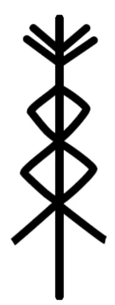
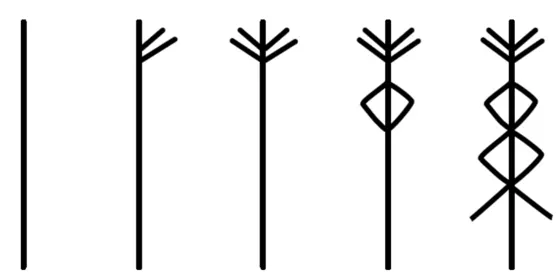

Rune Grimoire
Prosperity and Well-Being Galdrastafr
A mighty galdrastafr for prosperity and well-being, one of the more obvious cosmic and magickal concerns of the runic system.
Component Runes
- Fehu (F) x2: mobile wealth, prosperity, abundance
- Thurisaz (TH) x4: directed force, reactive power
- Ingwaz (NG): gestation, potential energy, fertility
- Othala (O): ancestral property, inherited wealth, homeland

Construction
The eight runes are arranged in a symmetrical configuration. A quick analysis reveals manifold sources of power contained within this bind rune.
In the carving and loading of bind runes, each intended stave must be either carved individually or reinforced within the collective configuration, and must be initially charged individually.

Carving Order
The order of carving for this galdrastafr proceeds through five stages. After the fifth stage, the four Thurisaz runes concealed in the figure should be deepened with the proper number of repetitions of the galdr.
See Foundations & Ethics for deeper interpretation of numerical symbolism.
Usage
Suited for workings aimed at material abundance, financial stability, physical well-being, and the steady growth of resources in all areas of life.